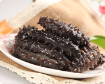

名家聊养生
名家聊养生
除湿气除湿气除湿气除湿气除湿气除湿气
体内的湿气过重，往往会影响到人的生活，湿气过重的话，会让人觉......体内的湿气过重，往往会影响到人的生活，湿气过重的话，会让人觉......
聊聊乳腺癌高发
研究人员对8000多名孕妇进行研究，按照“每周摄入鱼和海鲜数量超......

办公室颈椎病
真正的野生海参一头小的几十元，大的上百元，即便是土豪也会珍......真正的野生海参一头小的几十元，大的上百元，即便是土豪也会珍......

办公室颈椎病
真正的野生海参一头小的几十元，大的上百元，即便是土豪也会珍...真正的野生海参一头小的几十元，大的上百元，即便是土豪也会珍...